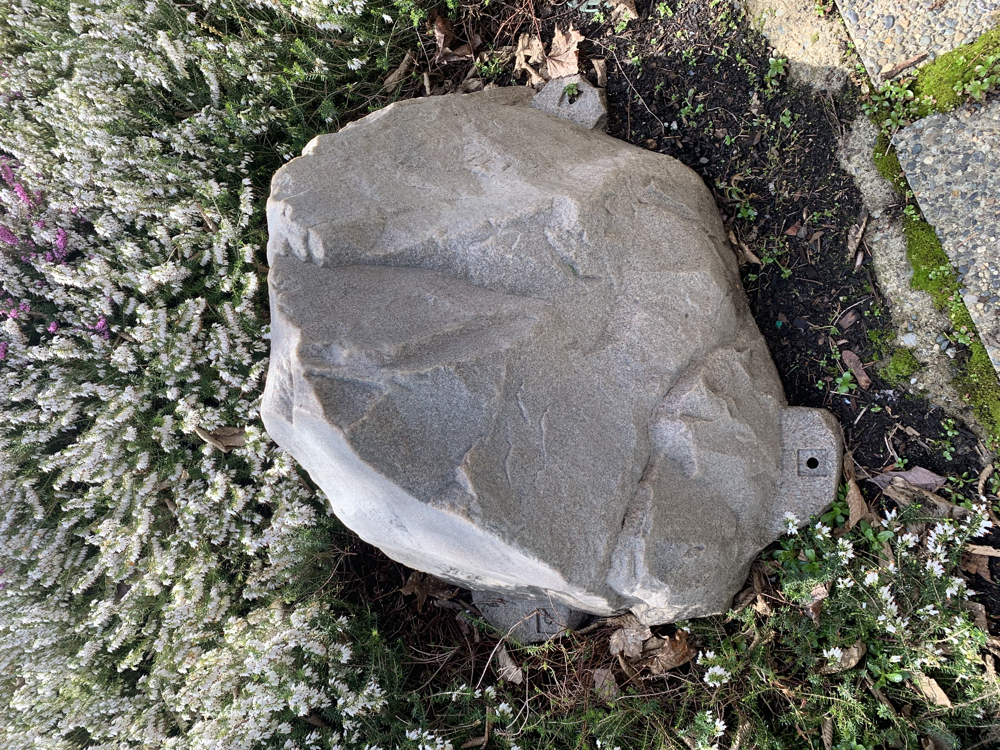
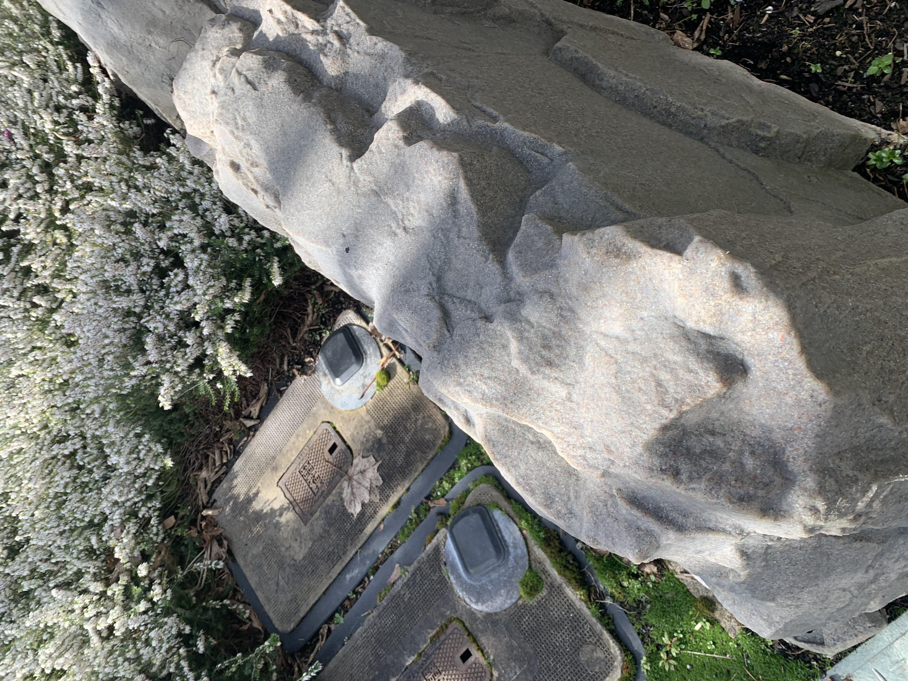
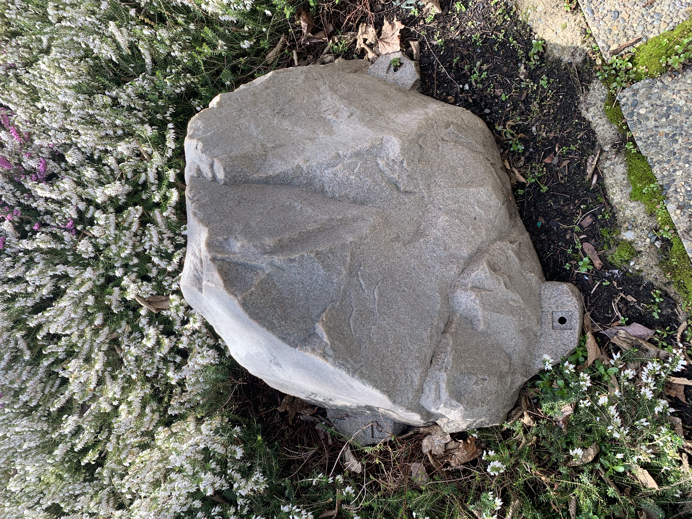
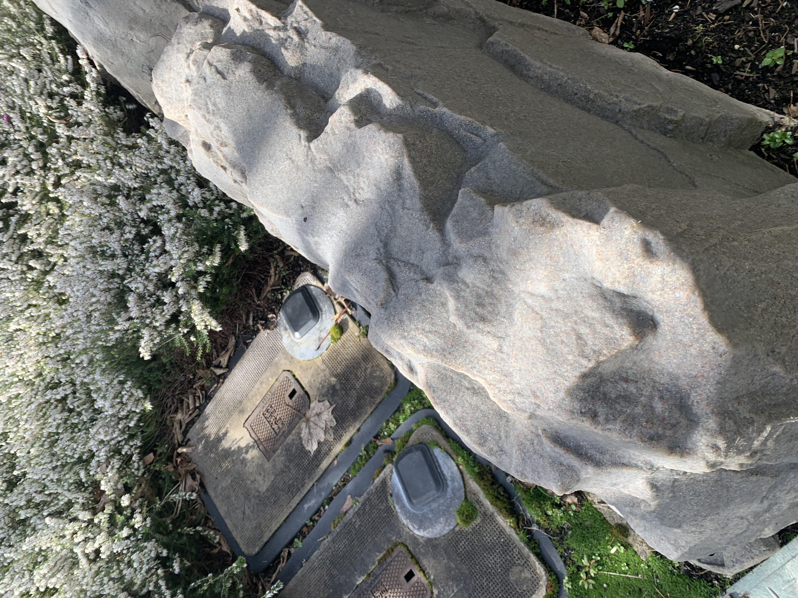

/ AN ARCHIVE
 



These images represent a larger photographic archive. The archive consists of images documenting fake rock electrical boxes. The environments, textures, installation and overall design are all of concern in the photographic exercise. The example images were collected Fall 2019. To add to the archive please reach out to me directly via any of the provided contact information.